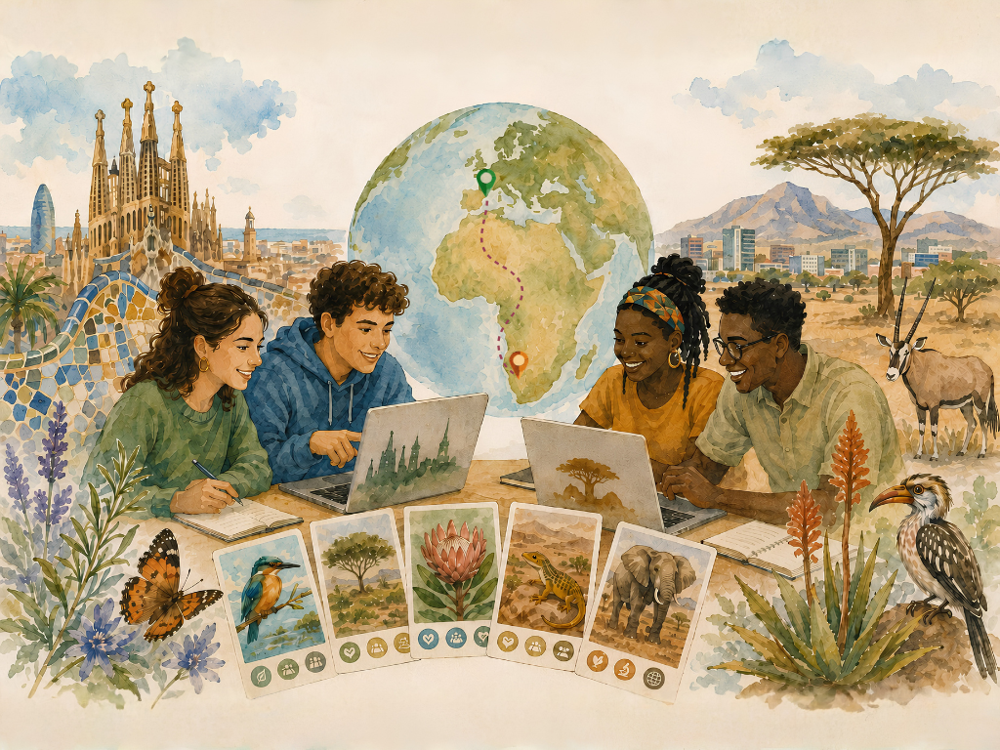

PhyloGenome COIL
UAB × UNAM Edition
5–30 D’OCTUBRE DE 2026

Different places, shared knowledge, common purpose
Basat en la metodologia COIL —Collaborative Online International Learning—, aquest taller connecta estudiants de la UAB i de la University of Namibia (UNAM) per explorar i co-crear coneixement per a la conservació de la biodiversitat.
4 SETMANES
Aprenentatge col·laboratiu en línia

EQUIPS MIXTOS
Estudiants de totes dues universitats
100% EN LÍNIA
Sessions síncrones i asíncrones
PRODUCTES FINALS
Cartes PhyloGenome i materials divulgatius

IMPACTE GLOBAL
Coneixement per a la conservació de la biodiversitat
QUÈ FAREM?
- Explorarem diferents entorns naturals i les espècies que hi viuen
- Investigarem la crisi de la biodiversitat i el paper fonamental de la genòmica
- Crearem noves cartes pel joc PhyloGenome
- Presentarem els recursos divulgatius generats
PER QUÈ PARTICIPAR-HI?
- Experiència internacional sense mobilitat
- Treball intercultural i perspectives globals
- Biodiversitat, conservació i sostenibilitat
- Comunicació científica i creativitat